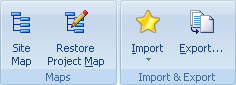

Use the Tools menu to access useful add-ons of Portable Offline Browser.
Browse With - Contains list of external browsers to browse downloaded Projects or certain files from the Project Map.
View In & Edit In - Contains list of external tools to view or edit downloaded files from the Project Map. You can setup the list of tools in the Options dialog | Tools section.
Data Mining - Processes downloaded files to extract data, convert texts, perform other actions using an external TextPipe tool.
Print - Prints all downloaded pages of the selected Project .

Templates
Templates are special Projects that can be setup for easier creation of your downloading tasks. You can have as many templates as you want. Use the Templates dialog to view them. If you create a new Project based on some template, the Project will have all settings of the template except the URLs field.
You can use templates to create Projects with the New and Paste buttons in the Home tab of the Ribbon.
Create Template - Opens Project Properties dialog to add a new template to the Templates dialog.
Templates - Opens Templates dialog to manage them.
Apply Template - Changes project settings according to one of the templates. You can choose the desired template and what parts of it should be applied.

Site Map - starts downloading the selected Project. However downloaded files are not saved to the disk. They are used only to make the structure Map of the site.
Restore Site Map - this is a tool to restore a corrupt or missing Project Map of the selected Project. It goes through the downloaded files on the disk and adds to the Map the ones that correspond Project settings (Level, URL/File Filters, etc.)
Export - Copies all downloaded files for the selected Folder or Project to a specified directory. Files with special information (descr.wd3, *.primary) are not copied. It can also add standard extensions to the copied files or rename them using 8+3 or Joilet file names format. Other features include creation of HTML Help, ZIP, EXE, MHT files and FTP upload.
Use the Home | Import menu to add new Projects, taking their URLs from various Web browser Favorites, Bookmarks and Hot lists.

Publish - Add your Project to the collection of user templates on MetaProducts.com site.
Published Projects - browse a list of a user-published Project templates.
Backup/Restore - Saves to a single file or restores the Project, including its settings, map and all downloaded files. The resulting .boe file can be used to transfer the Project to another computer.